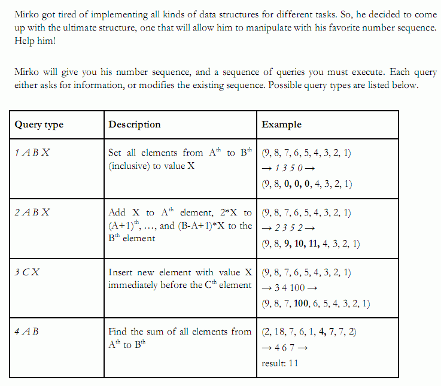

你需要维护一个序列，支持以下4种操作。一，将区间(u,v)的数覆盖为C；二， 将区间(u,v)的数依次加上一个以C为首项、C为公差的等差数列；三，将数C插入 第i个位置；四，查询区间(u,v)的数的和。序列最初有n个数，一共会有Q次操 作。保证结果在longlong范围内。
5 5 1 2 3 4 5 1 5 5 0 4 4 5 4 5 5 2 1 5 1 4 1 5
4 0 25
n, Q <= 100,000.